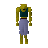

Wolfman

| Config name | canafis_werewolf_man2 |
| NPC id | 1031 |
| Combat level | 88 |
| Hitpoints | 100 |
| Attack / Strength / Defence | 70 / 70 / 70 |
| Options | Attack |
| Category | werewolf |
| Wander range | 5 tiles from spawn |
| Max range | 20 tiles from spawn |
| Area folder | area_canifis |
| Defined in | scripts/areas/area_canifis/configs/canifis.npc |
| Bonuses | Magic def 60 |
Wolfman
Eek! A werewolf!
Drops
Drop script: scripts/drop tables/scripts/werewolf.rs2 (category handler _werewolf)
Always dropped
| Item | Quantity | Rarity | Notes |
|---|---|---|---|
| 1 | Always | ||
| 1 | Always |
Locations
This NPC is not placed on the map by the map files (it may be spawned by scripts, e.g. during quests, or be a variant).